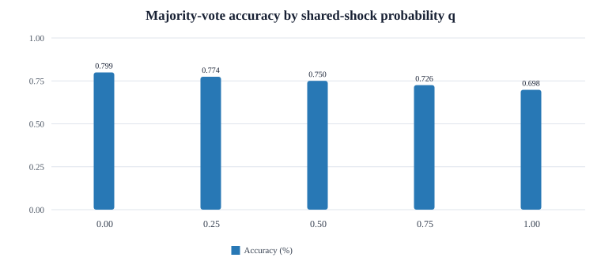
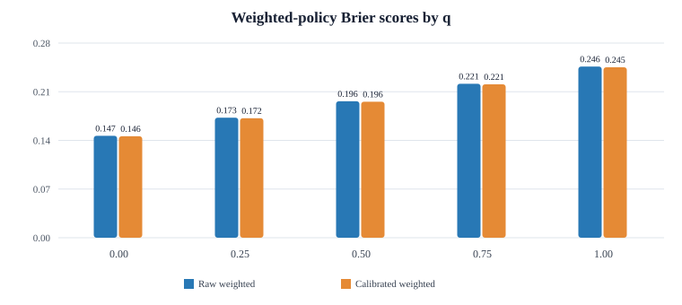

Experiment · Agentic AI · Multi-agent decisions
When AI agents fail together, adding more votes may not help
A synthetic experiment studies shared shocks, majority voting and confidence-weighted aggregation across three agents.
By Muzammal Hussain · 24 October 2026 · Synthetic research
An ensemble can look more reliable when its members make independent errors. If several agents can be wrong for the same underlying reason, their votes are not independent evidence. This experiment varies the probability of a shared-shock event and measures how majority accuracy and weighted-policy Brier scores change. No real LLMs were called.
Key findings
- Majority accuracy fell as shared-shock probability increased: from 79.932% at q = 0 to 69.800% at q = 1.
- Mean raw weighted Brier score rose from 0.146602 to 0.246166 across the same range; lower Brier scores are better.
- Calibration adjustment made only a small difference: the mean calibrated-weighted Brier score was slightly lower at each reported q.
- Accuracy was unchanged between the two weighted policies within each seed and q. ECE did not improve consistently.
- These are synthetic results, not measurements of real language models or deployed agent teams.
Experimental design
The simulator uses three agents with nominal skills 0.80, 0.70 and 0.62. Five seeds were run with 2,500 scenarios per seed. The parameter q is the shared-shock mixture probability: it is not a pairwise correlation coefficient. The comparison includes majority-vote accuracy, raw confidence-weighted Brier score and calibrated-weighted Brier score.
Results


| q | Majority accuracy | Raw weighted Brier | Calibrated weighted Brier |
|---|---|---|---|
| 0.00 | 79.932% | 0.146602 | 0.145962 |
| 0.25 | 77.424% | 0.172583 | 0.171934 |
| 0.50 | 75.024% | 0.196304 | 0.195580 |
| 0.75 | 72.552% | 0.221443 | 0.220687 |
| 1.00 | 69.800% | 0.246166 | 0.245224 |
Interpretation
The main pattern is that increasing the shared-shock probability coincides with lower majority accuracy and worse Brier scores. The calibration adjustment's average Brier improvement is small, so it should not be presented as a complete solution to correlated errors. A hard majority decision's accuracy is also not directly equivalent to a probabilistic Brier score; they measure different properties.
Limitations
This is a synthetic simulator with chosen agent skills and a specific shared-shock mechanism. It does not establish how real LLMs correlate their errors, and q should not be interpreted as a measured correlation. Five seeds give a limited view of run-to-run variation. ECE improvements were not consistent.
Reproducibility and next steps
The experiment uses Python and synthetic scenarios. A useful next step is to measure error dependence in real model outputs, separate common prompts from shared evidence, and evaluate calibration on held-out data.